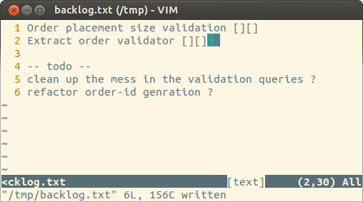

Working with legacy code
Pawel Pierzchala @zwrozka
We work with legacy code daily
We create legacy code daily
How to cope with legacy code?
The algorithm
- Find the code you want to fix
- Find the entry point
- Test it
- Fix it
How to fix it?

Or how to change spaghetti into ravioli?
Red Green Refactor?
Backlog
Work in small steps
and add unit tests as you go
Start with naming the conditions
if roll % 2 != 0
@won = true
end
winning_roll = roll % 2 != 0
if winning_roll
@won = true
end
Extract methods
50.times do |i|
@pop_questions.push "Pop Question #{i}"
@science_questions.push "Science Question #{i}"
@sports_questions.push "Sports Question #{i}"
end
def create_question(category, number)
"#{category} Question #{number}"
end
50.times do |i|
@pop_questions.push create_question("Pop", i)
@science_questions.push create_question("Science", i)
@sports_questions.push create_question("Sports", i)
end
Observe patterns
Similar prefixes?
Probably an object
puts "#{current_player_name} has #{current_player_purse} coins"
class Player < Struct.new(:name, :purse)
end
puts "#{current_player.name} has #{current_player.purse} coins"
Similar lists of arguments?
Probably an object
def is_winning?(purse, place)
def score(purse, place)
def has_won(name, purse, place)
class Player < Struct.new(:name, :purse, :place)
def is_winning?(player)
def score(player)
def has_won(player)
Avoid nightmare of integration
Don't create feature branch
Exercise
Utility for renaming episodes
github.com/psyho/legacy_renamerUsage
renamer.rb Seinfeld test result
renamer should accept its output files as input
Create an e2e test and speed it up with VCR
vcr